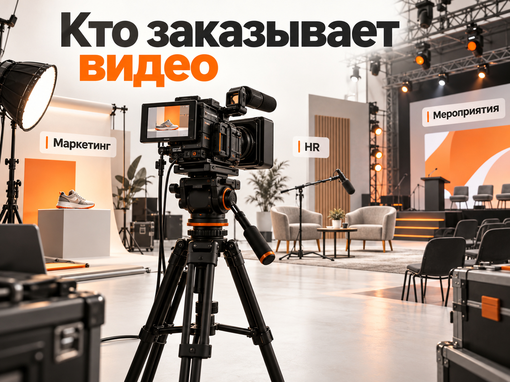
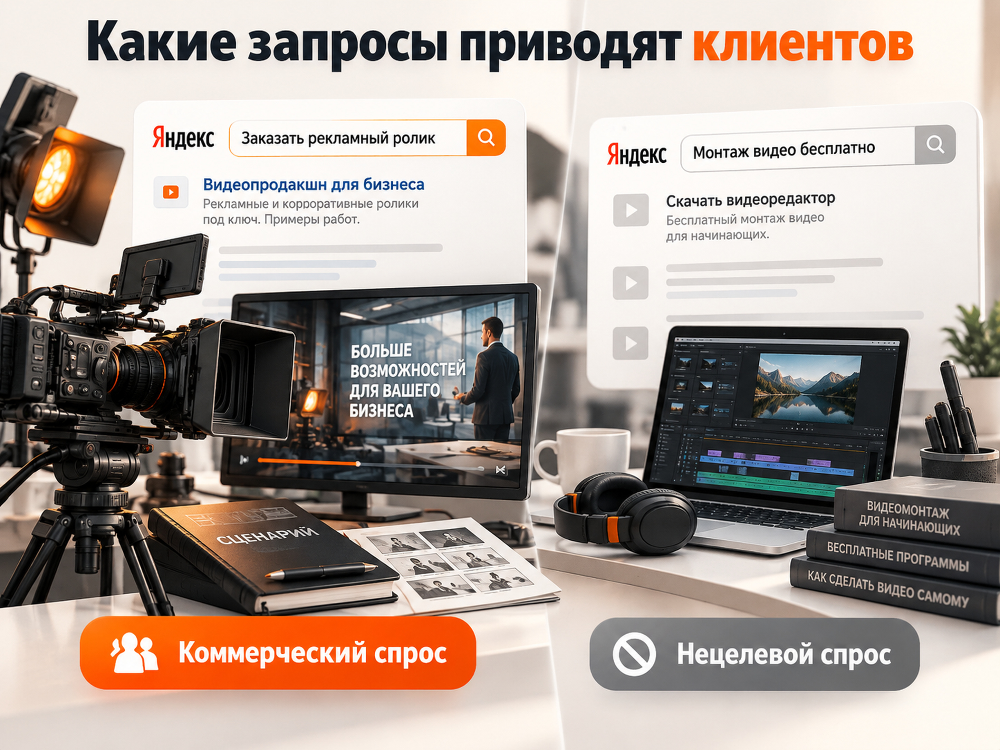

Блог о платном трафике
Продвижение видеопродакшна в 2026 году: как привлекать клиентов и рассчитывать рекламный бюджет
Для продвижения видеопродакшна в России я бы начал с Яндекс Директа на Поиске, отдельных предложений под востребованные видеоформаты и сайта с убедительным портфолио. Дополнительно стоит развивать SEO и партнёрства с агентствами, которые регулярно заказывают видеоконтент.
Главная особенность ниши - видеопродакшн продаёт не просто видеосъёмку, а решение конкретной бизнес-задачи. Одному клиенту нужен рекламный ролик для нового продукта, другому - корпоративный фильм, третьему - десятки коротких видео для регулярного продвижения.
Поэтому эффективность рекламы нужно оценивать не только по стоимости заявки, но и по количеству подходящих проектов, заключённых договоров и маржинальному доходу. Один крупный заказ может оказаться ценнее десятков обращений на недорогой монтаж.
Ниже рассмотрим продвижение студии, которая работает преимущественно с корпоративными заказчиками. В расчётной модели тестовый рекламный бюджет составляет 90 000 ₽ в месяц. Это пример для оценки экономики, а не обязательная сумма для всех видеопродакшнов.
Кто заказывает услуги видеопродакшна и где искать спрос
Основная аудитория B2B-видеопродакшна - компании, которым требуется видеоконтент для рекламы, продаж, обучения персонала, коммуникаций или мероприятий.
Заказчиком может выступать непосредственно собственник бизнеса, но в более крупных организациях подрядчика чаще ищут сотрудники профильных подразделений.
| Заказчик | Что ему требуется | Что важно при выборе |
|---|---|---|
| Маркетолог или бренд-менеджер | Рекламные и продуктовые ролики | Соответствие задаче, качество исполнения, сроки |
| HR-отдел | Видео о работодателе, интервью, обучение | Понятный процесс, работа с сотрудниками |
| Рекламное агентство | Производство видео для своего клиента | Надёжность, соблюдение сроков, возможность работать под брендом агентства |
| Организатор мероприятий | Съёмка конференций, форумов, корпоративов | Состав команды, оборудование, оперативность |
| Производственная компания | Демонстрация оборудования и производственных процессов | Опыт технической съёмки, понимание специфики объекта |
| Интернет-магазин или бренд | Продуктовые видео, рекламные креативы | Стоимость серии, скорость производства, адаптации под площадки |

Для продвижения важно сразу выбрать приоритетные сегменты.
Студии, которая специализируется на дорогих рекламных роликах, не обязательно бороться за запросы вроде «видеомонтаж недорого». А небольшому продакшну, выпускающему десятки коротких видео, необязательно конкурировать за производство масштабных корпоративных фильмов.
Первое решение перед запуском рекламы - определить, какие заказы студия хочет получать, с каким минимальным бюджетом и какой производственной загрузкой.
Почему не стоит продвигать все услуги одинаково
У разных направлений видеопродакшна отличаются стоимость проекта, аудитория и процесс продажи.
Например, короткий продуктовый ролик может приобретаться по относительно простой процедуре согласования. Производство имиджевого фильма для крупной компании может включать несколько встреч, тендер, утверждение сценария и продолжительные переговоры.
Объединять такие услуги в одно универсальное объявление неэффективно. Лучше разделить предложения по понятным заказчику задачам.
Какие услуги видеопродакшна выгоднее продвигать
При выборе направлений нужно учитывать три фактора: потенциальный спрос, маржинальность проекта и возможность получать повторные заказы.
Для студии, работающей с бизнесом, я бы выделил пять направлений.
1. Рекламные и продуктовые ролики. Подходят компаниям, которые продвигают товары, услуги и бренды. Здесь важно показывать качество готовой работы и возможности продакшна: сценарий, съёмку, монтаж, графику и адаптации под рекламные площадки.
2. Корпоративные и имиджевые фильмы. Более сложные проекты, где заказчик оценивает опыт команды, качество портфолио, организацию съёмок и способность работать с большим количеством участников.
3. Видео для маркетплейсов и социальных сетей. Направление интересно возможностью пакетного производства. Один клиент может заказывать не отдельный ролик, а регулярную серию видео.
4. Съёмка конференций и корпоративных мероприятий. Услуга с понятным сроком оказания и географической привязкой. Дополнительный потенциал дают отношения с организаторами мероприятий.
5. HR- и обучающие видео. Продукт для компаний, которые развивают внутренние коммуникации, обучение сотрудников или бренд работодателя.
Сколько бизнес платит за видеопродакшн
Единого среднего чека для видеопродакшна нет. Слишком сильно отличаются состав команды, сложность сценария, количество съёмочных дней и объём постпродакшна.
Для понимания порядка цен можно посмотреть открытые предложения российских студий.
В мае 2026 года Studio502 приводила для Москвы следующие ориентиры:
| Услуга | Опубликованный диапазон |
|---|---|
| Интервью или экспертное видео | 50 000 - 150 000 ₽ |
| Видео о компании | 150 000 - 400 000 ₽ |
| Продуктовый explainer | 120 000 - 350 000 ₽ |
| Корпоративный фильм | 400 000 - 1 500 000 ₽ |
Студия MustFilm в июле 2026 года указывала стоимость продуктового ролика от 300 000 ₽, а имиджевого фильма - от 500 000 ₽.
Это цены конкретных компаний, а не среднерыночная статистика. Они показывают, насколько сильно отличается экономика проектов.
Для рекламного прогноза стоимость договора недостаточно знать сама по себе. Нужно понимать, сколько денег остаётся после оплаты съёмочной группы, оборудования, площадок, актёров, монтажа и других переменных расходов.
Именно эта сумма определяет, сколько студия может позволить себе потратить на привлечение клиента.
Как подготовить сайт видеопродакшна для получения заявок
Для B2B-видеопродакшна сайт должен не просто демонстрировать красивые кадры, а помогать потенциальному заказчику понять, подходит ли студия для его задачи.
Универсальная главная страница с фразой «Создаём видео любой сложности» не решает эту задачу полностью.
Я бы использовал многостраничный сайт с отдельными разделами под приоритетные услуги:
- рекламные ролики;
- корпоративные фильмы;
- видеосъёмка мероприятий;
- видео для бизнеса и социальных сетей;
- моушн-дизайн и анимация, если студия действительно оказывает эти услуги.
Для каждого направления желательно показать соответствующие работы и объяснить состав услуги.
Как правильно оформить портфолио
Одна из распространённых ошибок видеопродакшнов - показывать десятки роликов без описаний.
Видеоряд может выглядеть профессионально, но потенциальному заказчику непонятно, насколько сложным был проект, что именно делала студия и какие задачи решала.
Полезнее оформить наиболее показательные работы как небольшие кейсы.
Структура кейса видеопродакшна:
- Кто был заказчиком и какую задачу требовалось решить.
- Какой формат видео был выбран.
- Что входило в работу студии.
- Как проходило производство: сроки, съёмки, монтаж.
- Какой ролик получился.
- Какой результат получил заказчик, если он подтверждён.
Если данных об эффективности ролика нет, не нужно придумывать рост продаж или конверсии. Достаточно описать выполненную задачу и показать результат производства.
Особенно полезны примеры, где раскрываются особенности работы: съёмка действующего предприятия, производство серии роликов за одну смену, организация съёмок в нескольких городах.
Портфолио должно отвечать не только на вопрос «Насколько красиво снимает студия?», но и на вопрос «Сможет ли она выполнить мой проект?».
Что размещать на посадочной странице
На странице конкретной услуги я рекомендую размещать:
- понятный заголовок с названием услуги;
- видео с релевантными примерами;
- описание того, что входит в производство;
- этапы работы и согласования;
- ориентир стоимости или принципы составления сметы;
- сроки, если их можно обоснованно указать;
- ответы на типичные вопросы;
- форму для получения предварительного расчёта.
Необязательно публиковать фиксированный прайс на сложные проекты. Однако посетителю желательно понимать порядок стоимости, чтобы не тратить своё и время менеджера на заведомо неподходящие обращения.
В форме расчёта можно запросить тип видео, цель проекта, предполагаемый бюджет, сроки и контакты.
Это помогает студии быстрее оценивать запрос и отличать потенциальный заказ от случайного обращения.
Как настроить Яндекс Директ для видеопродакшна
Для первого теста платной рекламы я бы отдал приоритет Поиску Яндекса. Здесь можно работать с людьми, которые уже ищут производство видео или конкретный вид ролика.
Рекламная сеть Яндекса полезна для расширения охвата и повторного контакта с потенциальными заказчиками, но не должна автоматически получать такую же долю бюджета, как Поиск.
Единая перфоманс-кампания позволяет выбирать места размещения, работать с тематическими словами, автотаргетингом и аудиториями. На старте удобно разнести поисковую рекламу и РСЯ, чтобы отдельно оценивать расходы и качество обращений.
Какие ключевые запросы использовать
Семантику лучше собирать не только вокруг термина «видеопродакшн».
Потенциальные заказчики могут искать подрядчика по названию конкретного продукта.
| Группа | Примеры запросов | Приоритет |
|---|---|---|
| Прямой спрос | видеопродакшн заказать, видеопродакшн студия, видеопродакшн москва | Высокий |
| Рекламные ролики | производство рекламных роликов, заказать рекламный видеоролик | Высокий |
| Корпоративные видео | снять корпоративный фильм, корпоративное видео заказать | Высокий |
| Продуктовые видео | съёмка видео для маркетплейсов, предметная видеосъёмка товаров | По специализации |
| Мероприятия | видеосъёмка конференции, съёмка корпоративного мероприятия | По специализации |
| Информационные запросы | как снять видео самому, идеи рекламных роликов | Низкий для прямой лидогенерации |
Названия групп - отправная точка для сбора семантики, а не готовое подтверждение частотности.
Перед запуском нужно проверить реальные формулировки в Вордстате, оценить прогноз трафика и посмотреть конкурентные объявления.
Особенно осторожно стоит работать с широкими запросами «видеосъёмка», «монтаж видео» и «создать видео». Они могут включать запросы частных клиентов, студентов, пользователей видеоредакторов и людей, которые собираются выполнять работу самостоятельно.
Если студия ориентирована только на бизнес, стоит исключать заведомо нецелевые запросы: обучение, вакансии, курсы, скачать, бесплатно, видеоредактор и другие подобные формулировки.
Минус-слова необходимо подбирать по реальной статистике, чтобы случайно не отрезать коммерческий спрос.
В 2026 году также важно контролировать категории автотаргетинга и отчёт по фактическим поисковым запросам. Одних вручную добавленных ключевых фраз недостаточно для контроля качества трафика.

Как писать объявления
Лучше использовать конкретное предложение вместо общего обещания высокого качества.
Например, для корпоративного видео:
Заголовок: Корпоративный фильм под ключ
Текст: Сценарий, съёмка, монтаж и графика. Примеры работ для бизнеса. Рассчитаем стоимость по вашему ТЗ.
Для продуктовых роликов:
Заголовок: Видеоролики для товаров и брендов
Текст: Предметная съёмка и производство видео для рекламы. Серии роликов и адаптации под площадки.
В объявлениях желательно сразу обозначать услугу и аудиторию. Обещания сроков или стоимости нужно использовать только в том случае, если студия действительно способна их выполнить.
Нужна ли видеопродакшну РСЯ
РСЯ может быть полезна, но на старте я бы не делал её основным каналом.
Услуги видеопроизводства часто выбирают после сравнения нескольких подрядчиков. Поэтому один из наиболее логичных сценариев для сетей - возвращать посетителей, которые уже смотрели портфолио или страницу услуги, но не отправили заявку.
Для ретаргетинга можно сформировать сегменты посетителей:
- просмотрели несколько работ;
- открывали страницу конкретной услуги;
- начали заполнять форму, но не отправили;
- возвращались на сайт повторно.
При этом нужно учитывать размер аудитории. Если посетителей мало, узкие сегменты могут просто не набрать достаточного объёма для стабильных показов.
Дополнительный тест - продвижение конкретных видеоформатов среди потенциально заинтересованной B2B-аудитории.
Например, ролик о производстве HR-видео можно использовать для рекламы соответствующей услуги. Важно, чтобы креатив демонстрировал готовую работу и понятное предложение, а не представлял собой обычную нарезку красивых кадров.
Какую стратегию выбрать
В начале работы всё зависит от доступной статистики.
Если заявок мало и конверсионной стратегии не хватает данных, разумно начать с контроля трафика, его качества и расходов, а затем переходить к оптимизации по более ценным действиям.
Не стоит дробить небольшой бюджет на десятки кампаний под отдельные услуги и микросегменты.
Когда накопятся подтверждённые обращения и данные CRM, можно усиливать оптимизацию по квалифицированным лидам, а не только по отправке формы.
Какие ещё каналы продвижения подходят видеопродакшну
Помимо Яндекс Директа я бы выделил SEO, отраслевые каталоги и партнёрства. Они решают разные задачи и не должны оцениваться по одинаковым показателям.
| Канал | Основная задача | Особенности |
|---|---|---|
| Яндекс Директ, Поиск | Получение обращений по сформированному спросу | Нужны точная семантика и бюджет на тест |
| SEO | Постепенное привлечение заказчиков из поиска | Требуются страницы услуг, кейсы и работа с сайтом |
| РСЯ и ретаргетинг | Возврат заинтересованных посетителей | Нужна аудитория достаточного объёма |
| Отраслевые каталоги | Получение доступа к компаниям, сравнивающим подрядчиков | Важно качество профиля и работ |
| Партнёрства | Повторные B2B-заказы | Требуют работы с агентствами и рекомендациями |
SEO-продвижение видеопродакшна
Для поискового продвижения особенно полезен многостраничный сайт.
Разные страницы должны закрывать разные потребности: производство рекламного видео, корпоративный фильм, съёмка конференции, анимация, предметная видеосъёмка.
Дополнительно можно публиковать материалы, которые помогают потенциальному заказчику подготовиться к проекту:
- сколько стоит производство рекламного ролика;
- как составить техническое задание на видео;
- что входит в стоимость корпоративного фильма;
- как выбрать видеопродакшн для бизнеса.
Такие статьи способны привлекать аудиторию на этапе выбора подрядчика. Но важно связывать их с конкретными услугами и портфолио.
SEO редко стоит рассматривать как мгновенную замену платной рекламе. Оно требует времени на развитие структуры, публикацию материалов и накопление поисковой видимости.
Каталоги и рейтинги
Для видеопродакшна полезны площадки, на которых бизнес сравнивает подрядчиков и изучает реальные работы.
Например, Workspace содержит специализированный раздел фото- и видеопродакшна с большим количеством опубликованных проектов.
Однако само присутствие в каталоге не гарантирует обращения.
Чтобы профиль приносил пользу, нужно показывать подходящие работы, специализацию, процесс производства и контакты. Если площадка предоставляет платное продвижение, оценивать его стоит по полученным квалифицированным запросам, а не только по просмотрам профиля.
Что показывают реальные кейсы продвижения видеопродакшна
По опубликованным материалам 2025-2026 годов можно подтвердить, что SEO и платная реклама применяются в нише. Но надёжного единого норматива CPL для B2B-видеопродакшна эти данные не дают.
Кейс Avastudio: рост поискового трафика на 45%
Агентство HeightLine описало SEO-продвижение видеопродакшна полного цикла Avastudio за май-декабрь 2025 года.
Студия работала с рекламными и корпоративными роликами, моушн-дизайном и компьютерной графикой.
Что сделали:
- расширили семантику;
- создали пять коммерческих и десять информационных страниц;
- переработали ключевые страницы;
- исправили технические ошибки;
- улучшили представление портфолио;
- развивали внешние ссылки.
По опубликованным данным, за сравниваемый восьмимесячный период посещаемость из органического поиска выросла с 15 592 до 22 604 визитов, то есть примерно на 45%.
Доля отслеживаемых запросов в топ-10 Яндекса увеличилась с 23% до 55%.
При этом в кейсе не раскрыты затраты на привлечение клиента и число оплаченных заказов. Следовательно, подтверждать им стоимость сделки или окупаемость нельзя.
Практический вывод: для видеопродакшна отдельные коммерческие страницы и кейсы могут стать важной частью привлечения заказчиков через поиск.
Кейс SEO-продвижения видеостудии полного цикла
В августе 2026 года агентство «В точку» опубликовало кейс поискового продвижения видеостудии полного цикла.
По заявлению агентства, за 11 месяцев проект получил 594 обращения из органического поиска.
Указанный ежемесячный бюджет на SEO составлял 74 000 ₽.
Если принять одинаковые расходы на протяжении всех 11 месяцев, получаем:
74 000 × 11 = 814 000 ₽.
814 000 / 594 = примерно 1370 ₽ на обращение.
Расчёт соответствует опубликованному показателю.
Но здесь необходимо учитывать два ограничения. Это данные одного агентства, не подтверждённые независимым аудитом. Кроме того, показатель относится к SEO и включает обращения, а не только подтверждённые договоры.
Переносить стоимость 1370 ₽ на рекламные кампании Яндекс Директа нельзя.
Почему нельзя ориентироваться только на красивые цифры кейсов
Существуют и опубликованные в 2026 году материалы о рекламе съёмки мероприятий и видеомонтажа, в которых приводятся низкие показатели стоимости заявки.
Однако некоторые из них описывают кампании, фактически проведённые в 2024-2025 годах, а часть опубликованных финансовых расчётов содержит расхождения.
Кроме того, привлечение заказа на монтаж свадебного видео и продажа корпоративного фильма за несколько сотен тысяч рублей - разные задачи.
Поэтому для полноценного B2B-видеопродакшна лучше строить прогноз от собственной экономики, а не от чужого минимального CPL.
Прогноз Яндекс Директа для видеопродакшна: бюджет, заявки и стоимость клиента
Прогноз нужно начинать с определения допустимой стоимости договора, а затем рассчитывать бюджет, конверсии и необходимый объём трафика.
Рассмотрим условную студию, которая занимается рекламными и корпоративными роликами и хочет получать дополнительные заказы из поиска.
Все показатели ниже являются расчётными допущениями для моделирования. Это не средние значения рынка и не обещание результата.
Исходные параметры прогноза
| Показатель | Принято для расчёта |
|---|---|
| Рекламный бюджет в месяц | 90 000 ₽ |
| Средняя стоимость клика | 150 ₽ |
| Конверсия перехода в заявку | 2,5% |
| Доля квалифицированных заявок | 60% |
| Конверсия квалифицированного лида в договор | 22,2% |
| Средняя выручка с одного договора | 300 000 ₽ |
Это модель для поисковой рекламы при условии, что в выбранной географии есть достаточный объём коммерческого спроса. На реальном рынке стоимость клика и доступное число переходов могут быть другими.
Сколько заявок можно получить
При бюджете 90 000 ₽ и средней стоимости перехода 150 ₽ реклама обеспечит 600 кликов.
Если сайт конвертирует 2,5% переходов в заявки, получаем 15 обращений.
При доле квалифицированных лидов 60% останется 9 обращений от потенциально подходящих заказчиков.
Если примерно 22,2% квалифицированных обращений завершаются договором, расчётная модель даёт около двух заказов.
| Этап | Расчётное значение |
|---|---|
| Клики | 600 |
| Заявки | 15 |
| Квалифицированные заявки | 9 |
| Договоры | Около 2 |
| Стоимость заявки (CPL) | 6000 ₽ |
| Стоимость квалифицированной заявки | 10 000 ₽ |
| Рекламные расходы на договор | 45 000 ₽ |
Важно: два договора - математическое ожидание модели, а не гарантированное количество продаж за месяц. При небольшом числе обращений фактический результат может заметно отличаться.
На практике конкретная студия может получать и более дорогие, и более дешёвые заявки. Результат зависит от географии, предложения, среднего чека, качества сайта и работы менеджера.
Что будет, если конверсия сайта окажется ниже
Предположим, что по тем же 600 переходам сайт конвертирует в обращение не 2,5%, а 1,5%.
В этом случае получится только 9 заявок.
При неизменных остальных допущениях ожидаемое количество договоров снизится примерно до одного. А фактических продаж за короткий период может не оказаться вообще.
Это показывает, почему улучшение посадочной страницы иногда влияет на экономику сильнее, чем изменение ставок.
Какой бюджет закладывать на тест
Для описанной модели бюджет 90 000 ₽ в месяц позволяет проверить гипотезу, если в поиске достаточно релевантного трафика.
Но я бы не рекомендовал автоматически переносить эту сумму на любую студию.
Перед запуском нужно:
- Собрать реальные коммерческие запросы.
- Проверить географию и доступный объём спроса.
- Оценить прогнозируемую стоимость перехода.
- Рассчитать допустимую стоимость квалифицированной заявки.
- Определить период тестирования с учётом цикла продажи.
Если прямого спроса мало, увеличение бюджета не создаст дополнительных покупателей с готовой потребностью. Оно может лишь расширить показы на менее релевантную аудиторию.
Как рассчитать окупаемость рекламы видеопродакшна
Стоимость заявки сама по себе не показывает, приносит ли реклама прибыль. Для оценки нужно учитывать маржинальность проекта и все затраты на привлечение.
Продолжим предыдущий расчёт.
Предположим, что один договор приносит 300 000 ₽ выручки, а после всех прямых производственных расходов остаётся 35%.
Это 105 000 ₽ маржинального дохода до затрат на привлечение клиента и постоянных расходов бизнеса.
По расчётной модели рекламные расходы на один договор составляют 45 000 ₽.
Допустим, услуги специалиста по настройке и ведению рекламы обходятся в 30 000 ₽ за месяц. При двух полученных договорах на каждый условно приходится ещё 15 000 ₽ расходов на маркетинг.
Получается следующая экономика:
| Показатель | На один договор |
|---|---|
| Выручка | 300 000 ₽ |
| Производственные переменные расходы | 195 000 ₽ |
| Маржинальный доход до маркетинга | 105 000 ₽ |
| Расходы на рекламу | 45 000 ₽ |
| Доля расходов на ведение | 15 000 ₽ |
| Остаток до постоянных расходов и налогов | 45 000 ₽ |
В этой модели полная стоимость привлечения клиента с учётом ведения составляет 60 000 ₽.
При этом оставшиеся 45 000 ₽ нельзя автоматически считать чистой прибылью. Из них ещё могут оплачиваться аренда, административный персонал, постоянные расходы и налоги.
Как определить максимально допустимую стоимость клиента
Допустим, студия хочет сохранять не менее 30 000 ₽ на каждый заказ после затрат на привлечение, но до остальных постоянных расходов.
При маржинальном доходе 105 000 ₽ и условных 15 000 ₽ расходов на ведение рекламы максимальные допустимые расходы непосредственно на размещение составят:
105 000 - 15 000 - 30 000 = 60 000 ₽.
Это условный допустимый рекламный CAC для выбранной бизнес-модели.
Если конверсия квалифицированного лида в договор равна 22,2%, допустимая стоимость такого лида составляет примерно:
60 000 × 22,2% = 13 320 ₽.
Этот показатель можно использовать как экономическую границу при оценке кампаний, но только при условии, что исходные данные о маржинальности и продажах соответствуют действительности.
Подробнее о методике расчёта можно прочитать в материале «Стоимость привлечения клиента (CAC)».
Как учитывать заявки и продажи видеопродакшна
Для видеопродакшна недостаточно настроить одну цель «Отправка формы» и оценивать рекламу только по её стоимости.
Нужно понимать, какие обращения приводят к полноценным проектам.
В CRM желательно фиксировать как минимум источник обращения, интересующую услугу, предполагаемый бюджет, статус квалификации, сумму коммерческого предложения и итог договора.
Практически полезно выделять следующие этапы:
- Первичное обращение.
- Проверка соответствия проекта специализации студии.
- Обсуждение задачи и получение брифа.
- Подготовка и отправка коммерческого предложения.
- Согласование условий.
- Подписание договора.
Это позволяет различать человека, который спросил цену монтажа, и маркетолога компании, который ищет подрядчика на производство серии рекламных роликов.
Какие показатели контролировать
В рекламных отчётах я бы отдельно отслеживал:
| Показатель | Для чего нужен |
|---|---|
| CPC | Контроль расходов на переходы |
| Конверсия сайта | Оценка посадочной страницы |
| CPL | Стоимость первичного обращения |
| CPQL | Стоимость квалифицированного обращения |
| Конверсия в коммерческое предложение | Оценка качества заявок и работы отдела продаж |
| CAC | Расходы на привлечение договора |
| Маржинальный доход | Проверка экономической эффективности |
Если заявок достаточно, но большинство клиентов не подходят по бюджету, проблема может находиться в семантике, объявлениях или позиционировании.
Если квалифицированные клиенты поступают, но договоров нет, необходимо проверять уже процесс продаж: качество брифа, сроки подготовки сметы, предложение и причины отказов.
Для такой оценки полезна связка Яндекс Метрики, коллтрекинга и CRM. При достаточном объёме данных можно передавать в рекламную систему информацию о квалифицированных обращениях и последующих продажах.
Подробнее о работе с качеством обращений - в статье «Квалификация лидов в продажах».
Как получать повторные заказы от корпоративных клиентов
Для видеопродакшна повторные заказы могут быть важнее постоянного поиска новых разовых проектов.
Особенно это касается компаний, которым регулярно требуются рекламные креативы, ролики для социальных сетей, видеоинтервью и материалы для внутренних коммуникаций.
Вместо предложения одного ролика студия может разработать пакетную услугу.
Например, регулярное производство видеоконтента может включать сценарную подготовку, один или несколько съёмочных дней, монтаж серии роликов и адаптацию материалов под разные площадки.
Почему пакетное производство интересно студии
Повторные заказы могут снижать нагрузку на поиск новых клиентов.
Кроме того, знакомая команда заказчика, повторное использование локаций и более предсказуемый график съёмок способны улучшать организацию производства.
Но здесь важно учитывать себестоимость.
Если клиент требует постоянного изменения сценариев, множества дополнительных правок или нестандартных съёмок, ежемесячный контракт не обязательно окажется выгоднее разового проекта.
Поэтому пакет нужно формировать с понятным составом работ, количеством роликов, сроками и условиями дополнительных изменений.
Ценность регулярного контракта заключается не только в повторной выручке, но и в предсказуемой загрузке производственной команды.
Ошибки, которые мешают продвижению видеопродакшна
Рекламировать все видеоуслуги одним предложением. Клиент, которому нужен корпоративный фильм, и заказчик предметной видеосъёмки решают разные задачи. Универсальное объявление часто проигрывает конкретному.
Ориентироваться только на дешёвые заявки. Низкий CPL может сопровождаться большим количеством обращений без бюджета на полноценное производство.
Не показывать реальные работы. Для видеопродакшна портфолио является одним из главных доказательств компетенции. Рекламировать студию без убедительных примеров особенно сложно.
Не объяснять состав производства. Клиенту важно понимать, входят ли в стоимость сценарий, съёмка, монтаж, графика, диктор, адаптации и дополнительные версии ролика.
Не учитывать длительный цикл согласования. По сложным B2B-проектам договор может заключаться значительно позже первого обращения. Оценка кампании только по быстрым продажам способна привести к неправильным решениям.
Не разделять B2B и B2C. Если студия специализируется на корпоративном видео, случайные обращения по свадебной и частной видеосъёмке могут ухудшать качество рекламной статистики.
Слишком рано масштабировать бюджет. Прежде чем увеличивать расходы, нужно убедиться, что реклама приносит квалифицированные обращения, а не просто дополнительные клики.
Пошаговый план продвижения видеопродакшна
Для новой или действующей студии я бы использовал следующий порядок работы.
Шаг 1. Определить прибыльные направления. Выбрать услуги, на которых студия хочет сосредоточиться, оценить минимальный бюджет проекта, маржинальность и производственные возможности.
Шаг 2. Проверить спрос. Собрать коммерческие запросы в Яндексе, изучить конкурентов и определить географию продвижения.
Шаг 3. Подготовить сайт. Сделать страницы приоритетных услуг, отобрать сильные примеры работ, показать состав производства и настроить получение брифа.
Шаг 4. Настроить аналитику. Связать рекламные источники с обращениями, квалификацией и договорами.
Шаг 5. Запустить поисковую рекламу. Начать с наиболее целевых запросов и контролируемого бюджета. В первые недели анализировать поисковые фразы, реальные обращения и работу посадочных страниц.
Шаг 6. Оценить качество заявок. Проверить, какие направления приводят подходящих заказчиков и сколько стоит квалифицированный лид.
Шаг 7. Подключить дополнительные каналы. Развивать SEO, отраслевые площадки, партнёрства и при достаточной аудитории ретаргетинг.
Шаг 8. Масштабировать работающие направления. Увеличивать вложения там, где понятна экономика договора и хватает спроса для роста.
Вывод: с чего начинать продвижение видеопродакшна
В 2026 году продвижение видеопродакшна имеет смысл строить вокруг конкретных задач бизнеса, а не только вокруг общего названия услуги.
Для первоначальной лидогенерации я бы использовал Яндекс Директ на Поиске с отдельными предложениями под коммерческие видеоформаты. Параллельно развивал бы сайт с подробными кейсами и SEO-страницами услуг.
Прогнозировать рекламу нужно от стоимости реального заказа. При этом важно учитывать не только цену заявки, но и долю квалифицированных обращений, конверсию в договор и маржинальный доход.
Рассмотренная модель с бюджетом 90 000 ₽ показывает, как при определённых допущениях могут получиться 15 заявок и около двух договоров. Это расчётный пример, который необходимо уточнять после анализа реального спроса и статистики конкретной студии.
Я занимаюсь настройкой и ведением Яндекс Директа для бизнеса. Если у вас видеопродакшн-студия и нужно оценить перспективы рекламы, можно обсудить специализацию, географию, сайт и экономику заказов, чтобы определить реалистичный бюджет тестирования.